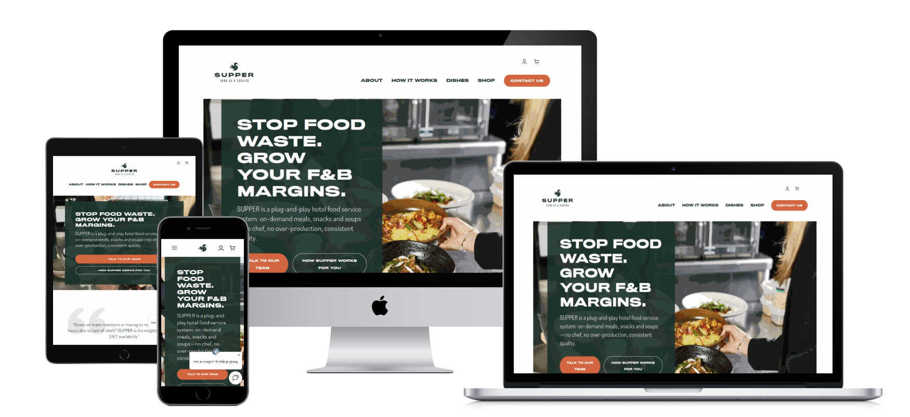

Case
Supper Services
Voor Supper Services werk ik aan een meertalige WooCommerce-webshop die nauw verbonden is met de dagelijkse operatie: bestellen, betalen, bezorgen, exporteren en oplossen wanneer iets vastloopt.

Vraag
Een webshop die onderdeel is van de dagelijkse operatie.
De website is onderdeel van het dagelijkse bestel- en productieproces. Daarom gaat het niet alleen om zichtbare pagina's, maar ook om bestellen, betalen, bezorgen, exporteren en snel kunnen ingrijpen als er iets misgaat.
Ik werk aan de bestelprocedure, betaalmethodes, btw- en prijslogica, ordermails, productgegevens en koppelingen met externe systemen. Daarbij gaat het steeds om de vraag: hoe sluit de webshop beter aan op hoe Supper Services intern werkt?
- Technisch beheer en foutopsporing in een bestaande WordPress-omgeving.
- Verbeteringen aan WooCommerce, bestelformulieren en betaalstappen.
- Prijs-, btw- en klantlogica voor verschillende soorten bestellingen.
- Leverdatum- en cutoff-logica die past bij de interne planning.
- Automatische orderexports en koppelingen met externe systemen.
- Ondersteuning voor meertaligheid, zakelijke klanten en abonnementen.